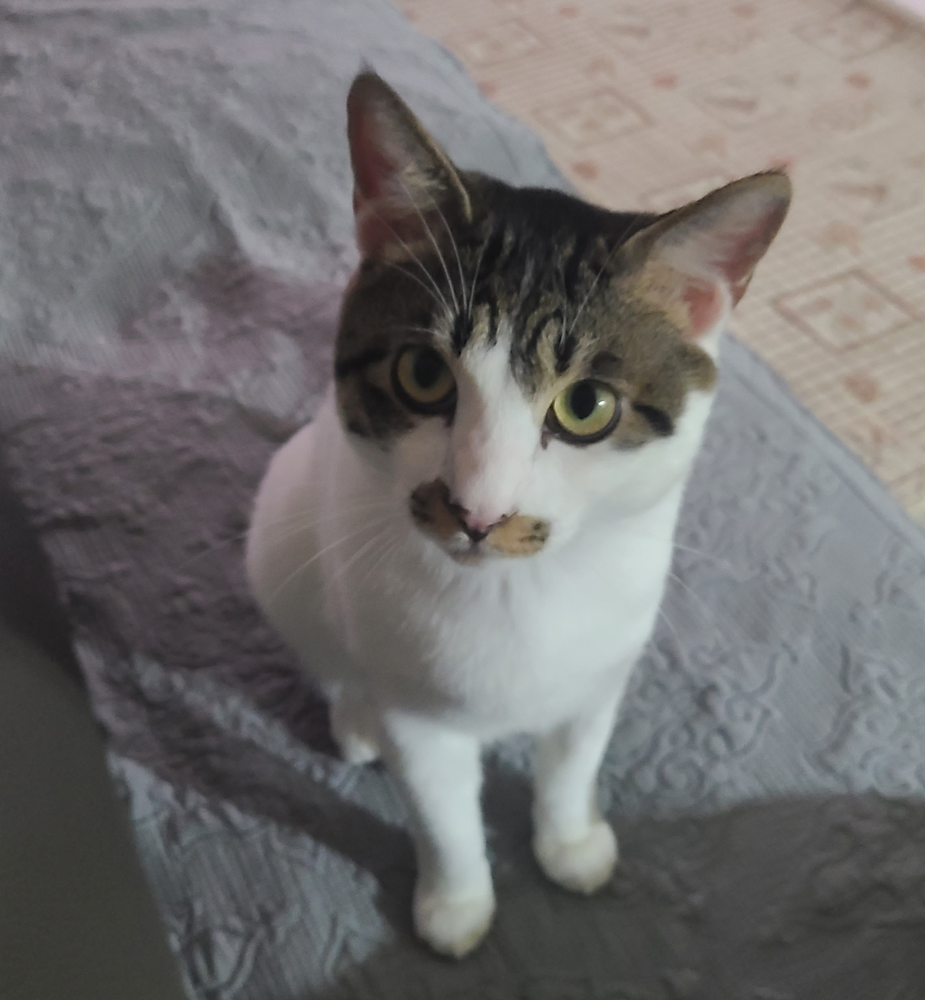

설치류
설치류 어류
어류 조류
조류 파충류
파충류 포유류
포유류고양이

- 노르웨이숲고양이
- 랙돌
- 러시안블루
- 먼치킨
- 뱅갈
- 브리티시 숏헤어
- 샴
- 스코티시 폴드
- 스핑크스
- 아메리칸 숏헤어
- 코리안 숏헤어
- 아비시니안
- 페르시안
- 터키시 앙고라
생선,닭고기 등 지방은 낮고 단백질이 높은 고기.(생고기는 세균으로 인한 질병을 일으킬 수 있음)
포도-타르타르산. 고양이의 신장에 문제를 일으킬 수 있음.
인공감미료(자일리톨 등) - 위험한 성분.비만 위험.
양파 - 고양이에게 독성으로 작용될 수 있음
초콜릿 - 소화방해,심박수 손상, 혈압 상승 등 신경계에 손상을 주어 발작을 일으킬 수 있음. 접촉금지.
카페인 - 과호흡,근육경련,고열 등의 증세가 나타날 수 있음.
적절한 양의 먹이, 다양한 영양소 섭취, 과자 및 간식(적절한 양과 빈도)
적절한 영양소가 포함된 음식을 제공.
고양이의 모피와 위생 유지
깨끗한 물 공급
정기적인 수의사 진료 받기 추천
고양이가 사는 환경을 깨끗하고 안전하게 유지
장난감과 스크래쳐 등을 제공하고 즐겁게 해주면서 파괴적인 행동 방지하기
적절한 교육 필요
고양이에게 충분한 애정 및 관심 보여주기
다른 동물과 함께 키울 때 공존할 수 있도록 교육
예방접종 및 구충제 먹이기 등을 정기적으로 하기
목욕 : 고양이는 목욕을 싫어함. 억지로 제압하지 않고 계속 달래주면서 미지근한 물로 목욕시키기. 고양이샴푸 필요.
배변 훈련 : 배변통과 모래 필요. 먹이그릇과 가깝지 않은 곳에 두기.